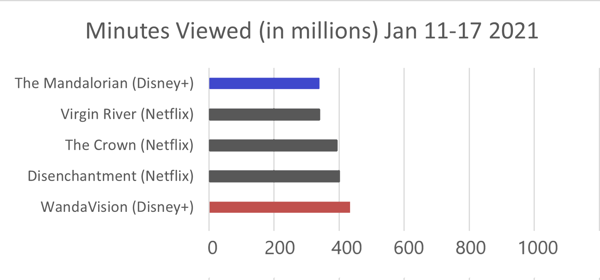

INFO 3402, Spring 2021
Early in this semester I made an argument as to why WandaVision was the best show airing at the time.
To do this, I created a visualization using a dataset from -source- I then made an html page to host the data visual that I created as a static image.
Here's what it looked like:

Arbitrary data on next slide, replace with WandaVision data
Another way to present this data, perhaps to another audience would be...
This way -insert example-
Words.
New section.
A third way to make this point with data...
This way -insert example-
Words.
Final slides... I chose to use Reveal.js for this assignment because this was one of my favorite features to learn this semester :)